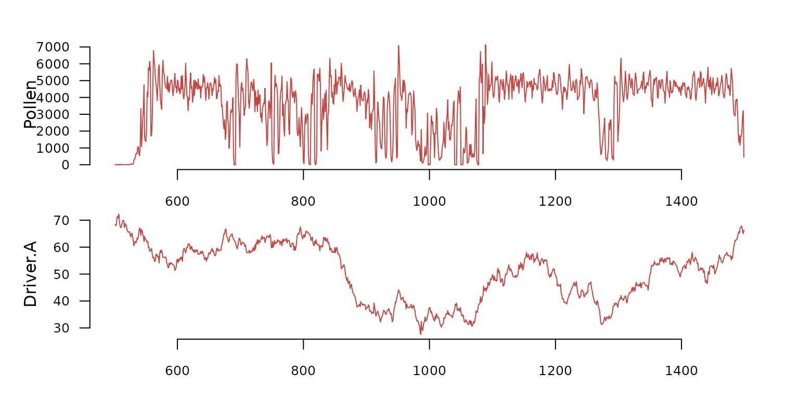
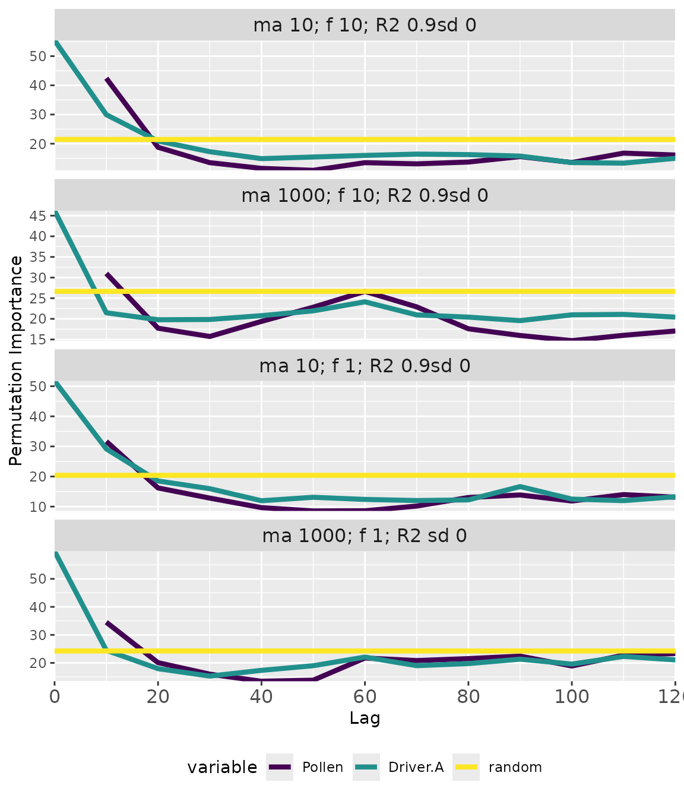

memoria and virtualPollen
memoria_and_virtualPollen.RmdIntroduction
The virtualPollen package generates synthetic pollen abundance curves by simulating virtual taxa with configurable life-history traits (maximum age, fecundity) and niche characteristics (optimum, breadth). Combined with memoria, this creates a powerful framework for systematically exploring how species traits modulate ecological memory patterns.
This article demonstrates how to run batch memory analyses across
multiple virtual taxa using memoria’s experiment functions.
For methodological details, see:
Benito, B.M., Gil-Romera, G. and Birks, H.J.B. (2020). Ecological memory at millennial time-scales: the importance of data constraints, species longevity and niche features. Ecography, 43: 1-10. https://doi.org/10.1111/ecog.04772
The virtualPollen Package
virtualPollen simulates pollen abundance curves using a
population dynamics model where virtual taxa have configurable traits
(life-span, fecundity, growth rate), environmental drivers influence
population dynamics through species-specific response functions, and
niche parameters define how each taxon responds to environmental
gradients.
Key trait parameters and their expected effects on memory:
| Parameter | Description | Expected Memory Effect |
|---|---|---|
maximum.age |
Maximum lifespan of individuals | Longer life → extended endogenous memory |
fecundity |
Number of offspring per reproductive event | Affects population recovery dynamics |
niche.A.sd |
Niche breadth (standard deviation) | Broader niche → weaker exogenous memory |
niche.A.mean |
Niche optimum position | Determines driver response curve |
Understanding the Data
The virtualPollen package provides two example datasets:
parameters and simulation.
The virtualPollen::parameters dataframe describes the
traits of the simulated species. Note the contrast between short-lived
(maximum.age = 10) and long-lived
(maximum.age = 1000) taxa, and between high
(fecundity = 10) and low (fecundity = 1)
fecundity.
data(parameters, package = "virtualPollen")
dplyr::glimpse(parameters)
#> Rows: 4
#> Columns: 16
#> $ label <chr> "S10A50-5_f10", "S1000A50-5_f10", "S10A50-5_f…
#> $ maximum.age <dbl> 10, 1000, 10, 1000
#> $ reproductive.age <dbl> 4, 100, 4, 100
#> $ fecundity <dbl> 10, 10, 1, 1
#> $ growth.rate <dbl> 1.50, 0.01, 1.50, 0.01
#> $ pollen.control <dbl> 0, 0, 0, 0
#> $ maximum.biomass <dbl> 100, 100, 100, 100
#> $ carrying.capacity <dbl> 10000, 10000, 10000, 10000
#> $ driver.A.weight <dbl> 1, 1, 1, 1
#> $ driver.B.weight <dbl> 0, 0, 0, 0
#> $ niche.A.mean <dbl> 50, 50, 50, 50
#> $ niche.A.sd <dbl> 10, 10, 10, 10
#> $ niche.B.mean <dbl> 50, 50, 50, 50
#> $ niche.B.sd <dbl> 5, 5, 5, 5
#> $ autocorrelation.length.A <dbl> 600, 600, 600, 600
#> $ autocorrelation.length.B <dbl> 600, 600, 600, 600The virtualPollen::simulation dataset is a list
containing simulated populations generated by
virtualPollen::simulatePopulation() using
parameters as input.
data(simulation, package = "virtualPollen")
str(simulation, max.level = 1)
#> List of 4
#> $ S10A50-5_f10 :'data.frame': 5000 obs. of 14 variables:
#> $ S1000A50-5_f10:'data.frame': 5000 obs. of 14 variables:
#> $ S10A50-5_f1 :'data.frame': 5000 obs. of 14 variables:
#> $ S1000A50-5_f1 :'data.frame': 5000 obs. of 14 variables:Each element is a dataframe with the results of a mechanistic simulation. The plot below shows a small section and subset of variables from the first simulated time series.

Batch Memory Analysis with
memoria::runExperiment()
The runExperiment() function applies the full
memoria workflow across multiple virtual taxa and sampling
resolutions:
experiment <- memoria::runExperiment(
simulations.file = simulation,
parameters.file = parameters,
parameters.names = c(
"maximum.age",
"fecundity"
),
driver.column = "Driver.A",
response.column = "Pollen",
time.column = "Time",
lags = seq(10, 120, by = 10),
repetitions = 30
)Visualizing Results with plotExperiment()
The plotExperiment() function generates faceted plots
showing memory patterns across all analyzed taxa:
memoria::plotExperiment(
experiment.output = experiment,
parameters.file = parameters
)
Interpreting the plot:
- Lines: Median importance across repetitions.
- Ribbons: 5th-95th percentile confidence intervals.
- Facets: Each panel shows a different taxon with its trait values.
- Colors: Different memory components (response = endogenous, driver = exogenous, random = significance baseline).
- R2 values: Model fit (pseudo R-squared from Random Forest).
When importance exceeds the random baseline, that memory component explains variation in pollen abundance better than chance.
Converting to Table Format
The experimentToTable() function reshapes experiment
results into a long-format dataframe for further analysis:
experiment_table <- experimentToTable(
experiment.output = experiment,
parameters.file = virtualPollen::parameters
)
dplyr::glimpse(experiment_table)
#> Rows: 152
#> Columns: 25
#> $ median <dbl> 42.43117, 18.77682, 13.50895, 11.55201, 10.88…
#> $ sd <dbl> 1.0158766, 0.6630606, 0.7150361, 0.7762626, 1…
#> $ min <dbl> 40.455338, 17.560109, 12.484472, 10.463731, 9…
#> $ max <dbl> 44.07475, 19.33819, 14.63643, 12.67534, 12.78…
#> $ variable <fct> Pollen, Pollen, Pollen, Pollen, Pollen, Polle…
#> $ lag <dbl> 10, 20, 30, 40, 50, 60, 70, 80, 90, 100, 110,…
#> $ name <chr> "ma 10; f 10; R2 0.9sd 0", "ma 10; f 10; R2 0…
#> $ R2mean <dbl> 0.9797754, 0.9797754, 0.9797754, 0.9797754, 0…
#> $ R2sd <dbl> 0.00010613, 0.00010613, 0.00010613, 0.0001061…
#> $ label <chr> "S10A50-5_f10", "S10A50-5_f10", "S10A50-5_f10…
#> $ maximum.age <dbl> 10, 10, 10, 10, 10, 10, 10, 10, 10, 10, 10, 1…
#> $ reproductive.age <dbl> 4, 4, 4, 4, 4, 4, 4, 4, 4, 4, 4, 4, 4, 4, 4, …
#> $ fecundity <dbl> 10, 10, 10, 10, 10, 10, 10, 10, 10, 10, 10, 1…
#> $ growth.rate <dbl> 1.5, 1.5, 1.5, 1.5, 1.5, 1.5, 1.5, 1.5, 1.5, …
#> $ pollen.control <dbl> 0, 0, 0, 0, 0, 0, 0, 0, 0, 0, 0, 0, 0, 0, 0, …
#> $ maximum.biomass <dbl> 100, 100, 100, 100, 100, 100, 100, 100, 100, …
#> $ carrying.capacity <dbl> 10000, 10000, 10000, 10000, 10000, 10000, 100…
#> $ driver.A.weight <dbl> 1, 1, 1, 1, 1, 1, 1, 1, 1, 1, 1, 1, 1, 1, 1, …
#> $ driver.B.weight <dbl> 0, 0, 0, 0, 0, 0, 0, 0, 0, 0, 0, 0, 0, 0, 0, …
#> $ niche.A.mean <dbl> 50, 50, 50, 50, 50, 50, 50, 50, 50, 50, 50, 5…
#> $ niche.A.sd <dbl> 10, 10, 10, 10, 10, 10, 10, 10, 10, 10, 10, 1…
#> $ niche.B.mean <dbl> 50, 50, 50, 50, 50, 50, 50, 50, 50, 50, 50, 5…
#> $ niche.B.sd <dbl> 5, 5, 5, 5, 5, 5, 5, 5, 5, 5, 5, 5, 5, 5, 5, …
#> $ autocorrelation.length.A <dbl> 600, 600, 600, 600, 600, 600, 600, 600, 600, …
#> $ autocorrelation.length.B <dbl> 600, 600, 600, 600, 600, 600, 600, 600, 600, …The output includes:
- Variable, Lag: Memory component and time lag.
- median, min, max: Importance statistics across repetitions.
- R2mean, R2sd: Model fit statistics.
Extracting Memory Features
The extractMemoryFeatures() function can process output
from experimentToTable() to compute the eight memory
features for each taxon:
features <- memoria::extractMemoryFeatures(
memory.pattern = experiment_table,
exogenous.component = "Driver.A",
endogenous.component = "Pollen"
)
dplyr::glimpse(features)
#> Rows: 4
#> Columns: 12
#> $ label <chr> "S10A50-5_f10", "S1000A50-5_f10", "S10A50-5_f1", …
#> $ strength.endogenous <dbl> 1.0000000, 0.2075139, 0.5378882, 0.4891335
#> $ strength.exogenous <dbl> 0.96585579, 0.00000000, 1.00000000, 0.02699637
#> $ strength.concurrent <dbl> 0.9544150, 0.5498155, 0.8813975, 1.0000000
#> $ length.endogenous <dbl> 0.08333333, 0.08333333, 0.08333333, 0.08333333
#> $ length.exogenous <dbl> 0.08333333, 0.00000000, 0.08333333, 0.08333333
#> $ dominance.endogenous <dbl> 0.08333333, 0.08333333, 0.08333333, 0.08333333
#> $ dominance.exogenous <dbl> 0, 0, 0, 0
#> $ maximum.age <dbl> 10, 1000, 10, 1000
#> $ fecundity <dbl> 10, 10, 1, 1
#> $ niche.mean <dbl> 50, 50, 50, 50
#> $ niche.sd <dbl> 10, 10, 10, 10The eight features (organized in three groups):
Strength (scaled 0-1): Peak importance relative to random baseline.
-
strength.endogenous: How strongly past pollen predicts current pollen. -
strength.exogenous: How strongly past environment predicts current pollen. -
strength.concurrent: How strongly current environment predicts current pollen.
Length (proportion 0-1): How far into the past memory extends above baseline.
-
length.endogenous: Temporal extent of significant endogenous memory. -
length.exogenous: Temporal extent of significant exogenous memory.
Dominance (proportion 0-1): Which component prevails across significant lags.
-
dominance.endogenous: Proportion of lags where endogenous > exogenous. -
dominance.exogenous: Proportion of lags where exogenous > endogenous.
Summary
The integration of virtualPollen and memoria enables systematic exploration of ecological memory:
- virtualPollen generates synthetic pollen curves with known trait parameters.
-
runExperiment()applies the memoria workflow across multiple taxa/resolutions. -
plotExperiment()visualizes memory patterns in faceted plots. -
experimentToTable()converts results to analyzable long format. -
extractMemoryFeatures()quantifies the eight memory features.
This framework revealed that life-span and niche features fundamentally shape ecological memory patterns, with important implications for interpreting palaeoecological records and climate reconstructions.
For complete methodological details and extended analysis, see:
Benito, B.M., Gil-Romera, G. and Birks, H.J.B. (2020). Ecological memory at millennial time-scales: the importance of data constraints, species longevity and niche features. Ecography, 43: 1-10. https://doi.org/10.1111/ecog.04772